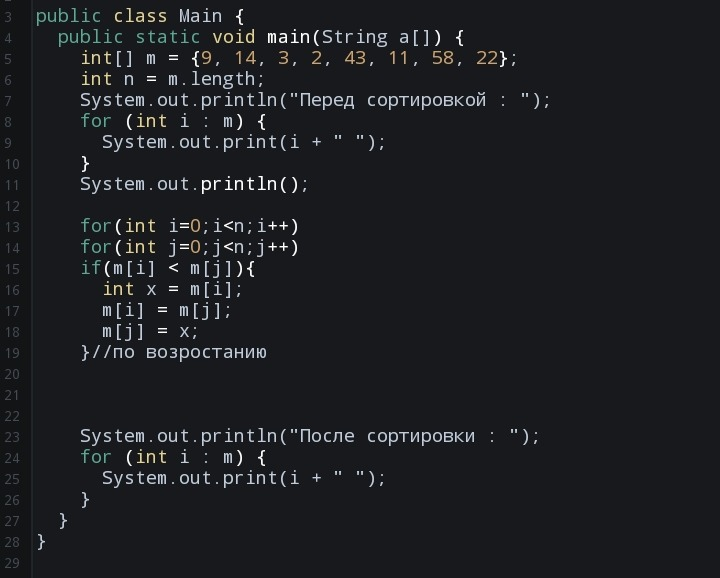

Она же «Bubble» она же «пузырёк.» Внутренний цикл снова и снова пробегает по массиву и сравнивает текущий элемент с предыдущим (поэтому пробег начинается с 1) и если текущий меньше, переставляет его с предыдущим. Место перестановки запоминается в переменной k, и в конце прохода в k находится индекс, начиная с которого массив отсортирован.
Реализация на Java :
Выберите, какой алгоритм вы хотите изучить:
Сортировка выбором